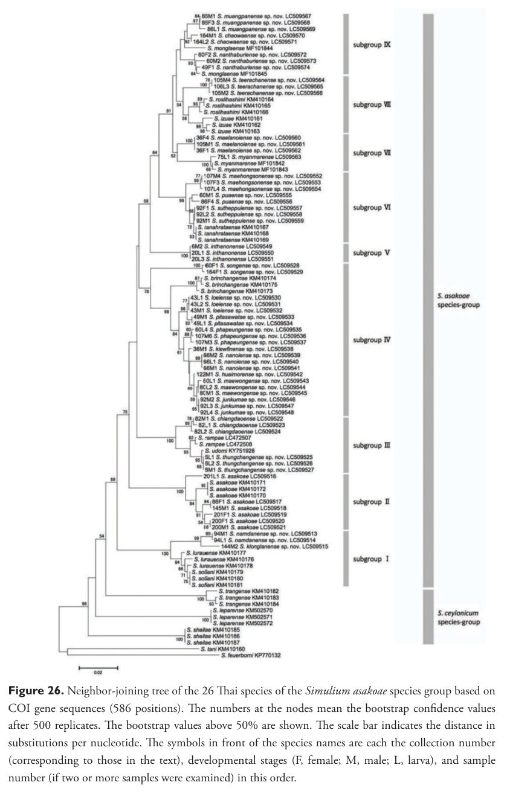

Species › Simulium › Gomphostilbia
Simulium muangpanense
| Classification | Genus Simulium, subgenus Gomphostilbia |
|---|---|
| Status | valid |
| Distribution | Thailand (Lampang) (Takaoka et al. 2020) |
| Thailand | Type locality: Pa Meing Village, Muang Pan District, Lampang Province, 1,097 m, 18°50'03.7"N 99°22'32.2"E, 9-VIII-2016 (Takaoka et al. 2020, p. 95) |
| Diagnostic notes | S. asakoae species-group (COI subgroup IX). Female: body 2.0-2.1 mm, frons:head ratio 1.0:4.0, labrum 0.61x clypeus, sensory vesicle 0.29-0.31x 3rd palp segment, fore basitarsus 6.4x width (5.8x in Discussion vs 6.9x in S. phulocense); note discrepancy: description p. 96 (Fig. 13A) states mandible has 2-3 outer teeth whereas female key couplet 20b falls under 4b 'without distinct teeth on outer margin'. Male: brown upper-eye facets in 13 vertical columns and 14 horizontal rows, fore basitarsus 6.7-7.3x width (vs 8.3x in S. phulocense), hind basitarsus 0.9x hind femur, ventral plate nearly straight/trapezoidal in caudal view. Pupa: cocoon without anterodorsal projection, terminal hook outer/inner margin 2.0-2.9 (couplet 12a). Larva: abdominal segments 1 and 4 greyish, 2-3 light ochreous, 5, 7 and 8 grey (Takaoka et al. 2020, pp. 95-99). |
| Sources | Takaoka et al. 2020 |
⚠ Conflicting characters
| Character | Source A | Source B | Type | Comment |
|---|---|---|---|---|
| Outer mandibular teeth in female key vs description | Takaoka et al. 2020: Diagnosis (p. 95) and female description (p. 96, Fig. 13A): 'Mandible (Fig. 13A) with 20 inner teeth and two or three outer teeth at some distance from tip' | Takaoka et al. 2020: Female key couplet 20b (p. 142): placed under couplet 4b 'Mandible without distinct teeth on outer margin (Fig. 14A)' | different interpretation | Internal contradiction within Takaoka et al. 2020: female key kept as printed with note on couplet 20b pointing to the p. 96 description. |
How it keys out
The chain of characters leading to this taxon in each key (a ready-made diagnosis).
Thailand: Simulium asakoae species-group (females) (Takaoka et al. 2020) – couplet 20b
- 1b Hair tuft of base of radial vein yellow
- 2b Sensory vesicle short to medium-long, less than 0.4 times length of third palpal segment (Fig. 1A)
- 4b Mandible without distinct teeth on outer margin (Fig. 14A)
- 16b Sensory vesicle 0.25–0.32 times as long as third palpal segment; claw tooth 0.46–0.50 times as long as claw
- 17b Fore basitarsus 5.9–6.5 times as long as its greatest width
- 19b Hind basitarsus 5.9–6.2 times as long as its greatest width
- 20b Frons: head ratio 1.0:4.0 ⚠
Thailand: Simulium asakoae species-group (males) (Takaoka et al. 2020) – couplet 9a
- 1b Hair tuft of base of radial vein yellow
- 2b Upper-eye (large) facets medium to dark brown
- 4b Antenna brownish except scape, pedicel and base of first flagellomere yellowish
- 5a Hind basitarsus 0.9 time as wide as hind femur (Fig. 7A)
- 6b Ventral plate with ventral margin nearly straight medially when viewed caudally (Fig. 20F)
- 9a Upper-eye (large) facets in 13 vertical columns
Thailand: Simulium asakoae species-group (pupae) (Takaoka et al. 2020) – couplet 12a
- 1b Cocoon with or without anterodorsal bulge or short anterodorsal projection (up to ca. 1.0 mm long) extended at most up to anteroventral tips of cocoon
- 3b Dorsum of abdominal segments 1 and 2 unpigmented or light yellowish
- 5b Dorsum of abdominal segment 1 without minute tubercles
- 7b Cocoon without anterodorsal projection
- 9b Terminal hooks widened, plate-like, with outer margin over 1.5 times length of inner margin, and crenulated
- 10b Stalk of ventral pair thinner than interspiracular trunk
- 11b Gill arranged as (3+3)+2 from dorsal to ventral, with medium-long common basal stalk shorter than interspiracular trunk ⚠
- 12a Outer margin of terminal hook 2.0–2.9 times as long as inner margin ⚠
Thailand: Simulium asakoae species-group (mature larvae) (Takaoka et al. 2020) – couplet 20a
- 1b Abdominal segments 1–4 not unicolorous
- 12b Abdominal color pattern otherwise
- 13b Abdominal color pattern otherwise
- 15b Abdominal color pattern otherwise
- 18b Abdominal color pattern otherwise
- 19b Abdominal color pattern otherwise
- 20a Abdominal segments 1 and 4 greyish but abdominal segments 2 and 3 light ochreous (Fig. 25O)
Figures


